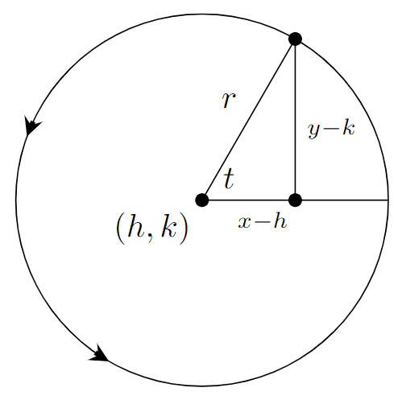
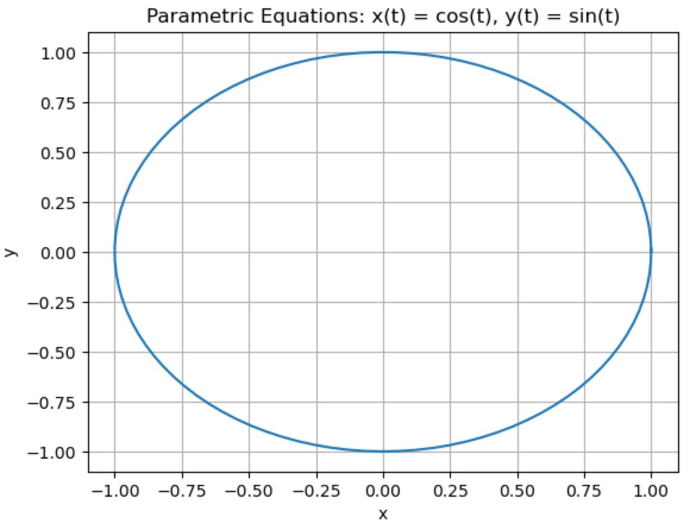
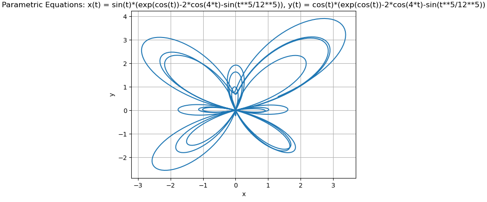
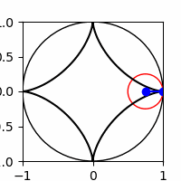

Solution to Calculus Exercises#
2. Functions#
Finding domain of functions.
Domain of \(f(x)=\sqrt{x-9}\) is \([9,\infty)\).
Domain of \(f(x)=\dfrac{1}{\sqrt{x}-9}\) is \([0,81)\cup (81,\infty)\).
Domain of \(f(x)=\ln(x-9)\) is \((9,\infty)\).
Given the graph of the function \(f\) below.

The intervals on which the graph of \(f\) is increasing are \((-\infty,0.5)\) and \((1.5,\infty)\), decreasing is \((0.5,1.5)\).
The intervals on which the graph of \(f\) is concave up is \((1,\infty)\), concave down is \((-\infty,1)\).
The only inflection point is at \((1,0)\).
Plot the following functions on the interval \([-5,5]\) by using the code.
\(f(x)=4+3x\)
\(f(x)=4\cdot 3^x \to\) increasing fast and can make the other plot unclear, hidden but can uncomment row to show the plot
\(f(x)=4+3\log(x) \to\) note that \(log(x)\) only defined when \(x>0\), hence the error message
\(f(x)=4\cos(3x)\)
\(f(x)=\dfrac{1.5}{1+4e^{-2.45x}}\)
(Can always show the plot one-by-one by commenting the row of the other plots)
import numpy as np
import matplotlib.pyplot as plt
# Define the functions
def f1(x):
return 4 + 3 * x
def f2(x):
return 4 * 3**x
def f3(x):
return 4 + 3 * np.log(x)
def f4(x):
return 4 * np.cos(3 * x)
def f5(x):
return 1.5 / (1 + 4 * np.exp(-2.45 * x))
# Define the interval
x = np.linspace(-5, 5, 100)
# Plot the functions
plt.plot(x, f1(x), label='f(x) = 4 + 3x', color='blue')
#plt.plot(x, f2(x), label='f(x) = 4 * 3^x', color='green') # the function f(2) values increasing fast and can make the other plot unclear. uncomment this row to show.
plt.plot(x, f3(x), label='f(x) = 4 + 3log(x)', color='red') # note that log(x) only defined when x>0, hence the error message.
plt.plot(x, f4(x), label='f(x) = 4cos(3x)', color='purple')
plt.plot(x, f5(x), label='f(x) = 1.5 / (1 + 4e^(-2.45x))', color='orange')
# Set plot title and labels
plt.title('Plot of Functions')
plt.xlabel('x')
plt.ylabel('f(x)')
# Add legend
plt.legend()
# Show the plot
plt.show()
C:\Users\isinggih\AppData\Local\Temp\ipykernel_21824\2646948458.py:12: RuntimeWarning: invalid value encountered in log
return 4 + 3 * np.log(x)
Given \(f(x)=1+6x^2\) and \(g(x)=6-\sqrt{x}\).
\([f+g](1234) \approx 9136507.872\)
\((g\circ f)(2345) \approx -5738.053534\)
\([f\cdot g](0.3456) \approx 9.29064512\)
\((f\circ f)(4567) = 93 967 528 536 925 351\)
\(g^{-1}(0.2345) = 33.24099025\)
3. Limits, Continuity, and Rates#
Given the graph of \(f(x)\) below:

\(\lim\limits_{x\to 2}f(x)\) does not exists since left limit \(\neq\) right limit
\(\lim\limits_{x\to 3}f(x)\) exist since left limit equals right limit
Calculate the following limits. Explain why or why not the limit exists.
\(\lim\limits_{x\to 7} 5\ln(x) = 5\ln(7) \approx 9.729550745\). The function \(\ln(x)\) continuous on \(x>0\), hence limit exists at \(x=7\).
\(\lim\limits_{x\to 3} \left(3x^3+4x^2-5x-6\right) = 96\) The function \(3x^3+4x^2-5x-6\) continuous on \((-\infty,\infty)\), hence limit exists at \(x=3\).
\(\lim\limits_{x\to 0} \dfrac{1}{x}\) does not exists. \(\lim\limits_{x\to 0^-} \dfrac{1}{x}=-\infty\) while \(\lim\limits_{x\to 0^+} \dfrac{1}{x}=\infty\)
Do the following problems:
\(\lim\limits_{x\to 0}e^{\sin(x)}=1\)
The zeroes of \(f(x)=4x^3+3x^2-3x+0.2\) on the interval \([0,1]\) are \(x\approx 0.0724173\) and \(x\approx 0.515903\)
Given \(f(x)=4x^3-2x^2+3x-7\).
Change of \(f\) between \(x=-1\) and \(x=2\) is \(39\)
Percent change of \(f\) between \(x=-1\) and \(x=2\) is \(\frac{975}{4} =243.75\) (in %)
Average rate of change of \(f\) between \(x=-1\) and \(x=2\) is \(13\)
Instantaneous rate of change of \(f\) at \(x=3\) is \(99\)
Percent rate of change of \(f\) at \(x=3\) is \(\frac{2475}{23}\approx 107.608\) (in % per units of \(x\))
Given \(f(x)=4x^3-2x^2+3x-7\). Plot the following:
Secant line between on \(f\) between \(x=-1\) and \(x=2\)
Tangent line on \(f\) at \(x=3\)
import numpy as np
import matplotlib.pyplot as plt
# Define the function
def f(x):
return 4*x**3 - 2*x**2 + 3*x - 7
# Define the secant line
def secant_line(x):
return f(-1) + ((f(2) - f(-1)) / (2 - (-1))) * (x - (-1))
# Define the tangent line
def tangent_line(x):
return f(3) + (4 * 3 * x**2 - 4 * 2 * x + 3) * (x - 3)
# Generate x values
x = np.linspace(-2, 4, 100)
# Generate y values for f(x)
y = f(x)
# Generate y values for the secant line
secant_y = secant_line(x)
# Generate y values for the tangent line
tangent_y = tangent_line(x)
# Plot the function and lines
plt.plot(x, y, label='f(x)')
plt.plot(x, secant_y, label='Secant line')
plt.plot(x, tangent_y, label='Tangent line')
# Mark the points (-1, f(-1)), (2, f(2)), and (3, f(3))
plt.scatter([-1, 2, 3], [f(-1), f(2), f(3)], color='red')
# Add the x=0 and y=0 axes
plt.axhline(0, color='black', linestyle='--')
plt.axvline(0, color='black', linestyle='--')
# Set the x-axis and y-axis labels
plt.xlabel('x')
plt.ylabel('y')
# Set axis labels and title
plt.xlabel('x')
plt.ylabel('f(x)')
plt.title('Secant and Tangent Lines')
# Add legend
plt.legend()
# Show the plot
plt.show()
JNB Supplement
Show code cell source
import numpy as np
import pandas as pd
import matplotlib.pyplot as plt
import matplotlib.animation as animation
from matplotlib.animation import FuncAnimation
%matplotlib notebook
frames=5 # number of frames in the movie
# Define the function f(x)
f = lambda x : x**2
a=4 #x coordinate of point of tangency
for n in range(frames):
fig = plt.figure(figsize=(10,10))
plt.xlim(3,9)
plt.ylim(5,100)
#---plot the function f(x) in black---
x = np.linspace(3, 9, 100)
y=f(x)
plt.plot(x,y,color='k')
#---plot the tangent line in red---
y_tan= f(a)+2*a*(x-a)
plt.plot(x,y_tan,'r--')
#---plot the secant segment in blue---
b=a+5/(n+1)
x_sec=np.linspace(a, b, 50)
y_sec= f(a) + (f(b) - f(a)) / (b - a) * (x_sec - a)
plt.plot(x_sec,y_sec,color='b')
# Set the x-axis and y-axis labels
plt.xlabel('x')
plt.ylabel('y')
# Set the title
plt.title('Secant Line Animation')
# Set the legend
plt.legend(['function','tangent','secant'])
plt.savefig(str(n)+'.png')
plt.close()
#----- Save the Animation as secant.gif-----
from PIL import Image
images = []
for n in range(frames):
exec('a'+str(n)+'=Image.open("'+str(n)+'.png")')
images.append(eval('a'+str(n)))
images[0].save('secant.gif',
save_all=True,
append_images=images[1:],
duration=1000,
loop=0)
4. Derivatives#
Find the derivative of the following functions using the limit definition of the derivative.
\(f(x)=3x^2-12x+32\)
\[\begin{align*} f\,'(x) &= \lim_{h\to 0} \dfrac{f(x+h)-f(x)}{h} \\ &= \lim_{h\to 0} \dfrac{\left[3(x+h)^2-12(x+h)+32\right]-\left[3x^2-12x+32\right]}{h} \\ &= \lim_{h\to 0} \dfrac{\left[3\left(x^2+2xh+h^2\right)-12x-12h+32\right]-\left[3x^2-12x+32\right]}{h} \\ &= \lim_{h\to 0} \dfrac{\left[3x^2+6xh+3h^2-12x-12h+32\right]-\left[3x^2-12x+32\right]}{h} \\ &= \lim_{h\to 0} \dfrac{6xh+3h^2-12h}{h} \\ &= \lim_{h\to 0} \left(6x+3h-12\right) = \boldsymbol{6x-12} \end{align*}\]\(g(x)=\dfrac{x}{x+2}\)
\[\begin{align*} g\,'(x) &= \lim_{h\to 0} \dfrac{g(x+h)-g(x)}{h} \\ &= \lim_{h\to 0} \dfrac{\dfrac{x+h}{x+h+2}-\dfrac{x}{x+2}}{h} \\ &= \lim_{h\to 0} \dfrac{\dfrac{(x+h)(x+2)}{(x+h+2)(x+2)}-\dfrac{x(x+h+2)}{(x+h+2)(x+2)}}{h} \\ &= \lim_{h\to 0} \dfrac{x^2+2x+hx+2h-x^2-xh-2x}{h(x+h+2)(x+2)}\\ &= \lim_{h\to 0} \dfrac{2h}{h(x+h+2)(x+2)}\\ &= \lim_{h\to 0} \dfrac{2}{(x+h+2)(x+2)} = \boldsymbol{\dfrac{2}{(x+2)^2}} \end{align*}\]\(h(x)=\sqrt{4x^2-6}\)
\[\begin{align*} h\,'(x) &= \lim_{h\to 0} \dfrac{h(x+h)-h(x)}{h} \\ &= \lim_{h\to 0} \dfrac{\sqrt{4(x+h)^2-6}-\sqrt{4x^2-6}}{h} \cdot \dfrac{\sqrt{4(x+h)^2-6}+\sqrt{4x^2-6}}{\sqrt{4(x+h)^2-6}+\sqrt{4x^2-6}}\\ &= \lim_{h\to 0} \dfrac{\left[4(x+h)^2-6\right]-\left[4x^2-6\right]}{h\left(\sqrt{4(x+h)^2-6}+\sqrt{4x^2-6}\right)}\\ &= \lim_{h\to 0} \dfrac{4x^2+8xh+4h^2-6-4x^2+6}{h\left(\sqrt{4(x+h)^2-6}+\sqrt{4x^2-6}\right)}\\ &= \lim_{h\to 0} \dfrac{8xh+4h^2}{h\left(\sqrt{4(x+h)^2-6}+\sqrt{4x^2-6}\right)}\\ &= \lim_{h\to 0} \dfrac{8x+4h}{\sqrt{4(x+h)^2-6}+\sqrt{4x^2-6}}\\ &= \dfrac{8x}{\sqrt{4x^2-6}+\sqrt{4x^2-6}} = \boldsymbol{\dfrac{4x}{\sqrt{4x^2-6}}} \end{align*}\]
Proof \(\left[f \pm g\right]' = f' \pm g'\) using the limit definition of the derivative.
Find the derivative of the following functions.
\(f(x)=3x^2-12x+32 \Rightarrow \boldsymbol{f\,'(x)= 6x-12}\)
\(g(x)=\dfrac{x}{x+2} \Rightarrow \boldsymbol{g\,'(x)=\dfrac{2}{(x+2)^2}}\)
\(h(x)=\sqrt{4x^2-6} \Rightarrow \boldsymbol{h\,'(x)=\dfrac{1}{2}\left(4x^2-6\right)^{-1/2}\cdot 8x = \dfrac{4x}{\sqrt{4x^2-6}}}\)
\(z(x)=x^5\sin\left(3x^4+1\right)+\ln\left(20^x-e^{5x}\right)\)
\(\boldsymbol{z\,'(x)=5x^4 \sin\left(3x^4+1\right) + x^5 \cos\left(3x^4+1\right) \cdot 12x^3 + \dfrac{20^x\ln(20)-5e^{5x}}{20^x-e^{5x}}}\)
Find the derivative of the following function using both Product and Quotient Rule, and verify that they gives the same answer.
\(a(x)=\dfrac{\sin(x)}{x} = \sin(x)\cdot x^{-1}\)
Product Rule: \(a\,'(x)= \cos(x)\cdot x^{-1} + \sin(x)\cdot \left(-x^{-2}\right) = \boldsymbol{\dfrac{\cos(x)}{x}-\dfrac{\sin(x)}{x^2}}\)
Quotient Rule: \(a\,'(x)= \dfrac{\cos(x)\cdot x - \sin(x)\cdot 1}{x^2} = \boldsymbol{\dfrac{\cos(x)}{x}-\dfrac{\sin(x)}{x^2}}\)\(b(x)=\dfrac{\cos(x)}{2-x^9} = \cos(x) \cdot \left(2-x^9\right)^{-1}\)
Product Rule: \(b\,'(x)= \left(-\sin(x)\right)\cdot \left(2-x^9\right)^{-1} + \cos(x) \cdot \left(-1\left(2-x^9\right)^{-2}\right)\left(-9x^8\right)= \boldsymbol{\dfrac{-\sin(x)}{2-x^9}+ \dfrac{9x^8\cos(x)}{\left(2-x^9\right)^2}}\)
Quotient Rule: \(b\,'(x)= \dfrac{-\sin(x)\left(2-x^9\right)-\cos(x)\left(-9x^8\right)}{\left(2-x^9\right)^{-2}} = \boldsymbol{\dfrac{-\sin(x)}{2-x^9}+ \dfrac{9x^8\cos(x)}{\left(2-x^9\right)^2}}\)\(c(x)=\dfrac{\sin\left(3+4^x\right)}{2-x^9} = \sin\left(3+4^x\right) \cdot \left(2-x^9\right)^{-1}\)
Product Rule:
\(\begin{align} c\,'(x)&= \cos\left(3+4^x\right)\cdot 4^x\ln(4)\cdot \left(2-x^9\right)^{-1} + \sin\left(3+4^x\right)\cdot \left(-1\left(2-x^9\right)^{-2}\right)\left(-9x^8\right)\\ &= \boldsymbol{\dfrac{\cos\left(3+4^x\right)\cdot 4^x\ln(4)}{2-x^9}+\dfrac{\sin\left(3+4^x\right)\cdot \left(9x^8\right)}{\left(2-x^9\right)^2}} \end{align}\)
Quotient Rule:
\(\begin{align} c\,'(x)&= \dfrac{\cos\left(3+4^x\right)\cdot 4^x\ln(4)\cdot\left(2-x^9\right)-\sin\left(3+4^x\right)\cdot \left(-9x^8\right)}{\left(2-x^9\right)^2}\\ &=\boldsymbol{\dfrac{\cos\left(3+4^x\right)\cdot 4^x\ln(4)}{2-x^9}+\dfrac{\sin\left(3+4^x\right)\cdot \left(9x^8\right)}{\left(2-x^9\right)^2}} \end{align}\)
Using Quotient Rule and the Basic Derivative formulas for \(\sin(x)\) and \(\cos(x)\):
\(\tan(x)=\dfrac{\sin(x)}{\cos(x)}\)
\[\begin{align*} \left[\tan(x)\right]' &= \dfrac{\cos(x)\cos(x)-(-\sin(x))\cos(x)}{\cos^2(x)} \\ &=\dfrac{\cos^2(x)+\sin^2(x)}{\cos^2(x)}\\ &=\dfrac{1}{\cos^2(x)} = \boldsymbol{\sec(x)} \end{align*}\]\(\cot(x)=\dfrac{\cos(x)}{\sin(x)}\)
\[\begin{align*} \left[\cot(x)\right]' &= \dfrac{(-\sin(x))\sin(x)-\cos(x)\cos(x)}{\sin^2(x)}\\ &= \dfrac{(-\sin(x))\sin(x)-\cos(x)\cos(x)}{\sin^2(x)}\\ &= \dfrac{-\left[\sin^2(x)+\cos^2(x)\right]}{\sin^2(x)}\\ &= \dfrac{-1}{\sin^2(x)} = \boldsymbol{-\csc(x)} \end{align*}\]\(\sec(x)=\dfrac{1}{\cos(x)}\)
\[\begin{align*} \left[\sec(x)\right]' &= \dfrac{0\cdot \cos(x)-1\cdot (-\sin(x))}{\cos^2(x)}\\ &= \dfrac{\sin(x)}{\cos^2(x)}\\ &= \dfrac{1}{\cos(x)} \cdot \dfrac{\sin(x)}{\cos(x)} = \boldsymbol{\sec(x)\tan(x)} \end{align*}\]\(\csc(x)=\dfrac{1}{\sin(x)}\)
\[\begin{align*} \left[\csc(x)\right]' &= \dfrac{0\cdot \sin(x) - 1\cdot \cos(x)}{\sin^2(x)} \\ &= \dfrac{-\cos(x)}{\sin^2(x)} \\ &= \dfrac{-1}{\sin(x)} \cdot \dfrac{\cos(x)}{\sin(x)} = \boldsymbol{-\csc(x)\cot(x)} \end{align*}\]
Find the interval(s) in which the following functions is increasing, decreasing, concave up, concave down.
\(a(x)=2x^3+3x^2-12x+4\) on \([-4,3]\)
Increasing: \(\boldsymbol{(-4,-2)\cup (1,3)}\)
Decreasing: \(\boldsymbol{(-2,1)}\)
Concave up: \(\boldsymbol{(-0.504,3)}\)
Concave down: \(\boldsymbol{(-4,-0.504)}\)\(b(x)=3x+\sin(4x)\) on \([0,1]\)
Increasing: \(\boldsymbol{(0,0.605)\cup (0.966,1)}\)
Decreasing: \(\boldsymbol{(0.605,0.966)}\)
Concave up: \(\boldsymbol{(0.785,1)}\)
Concave down: \(\boldsymbol{(0,0.785)}\)
Find the absolute and relative extrema of the following functions:
\(a(x)=2x^3+3x^2-12x+4\) on \([-4,3]\)
Relative max: \(\boldsymbol{\left(-2,24\right)}\)
Relative min: \(\boldsymbol{\left(1,-3\right)}\)
Absolute max: \(\boldsymbol{\left(3,49\right)}\)
Absolute min: \(\boldsymbol{\left(-4,-28\right)}\)\(b(x)=3x+\sin(4x)\) on \([0,1]\)
Relative max: \(\boldsymbol{\left(0.605,2.476\right)}\)
Relative min: \(\boldsymbol{\left(0.966,2.237\right)}\)
Absolute max: \(\boldsymbol{\left(0.605,2.476\right)}\)
Absolute min: \(\boldsymbol{\left(0,0\right)}\)
Use the MVT to do the following problems:
The number(s) \(c\) which satisty the conclusion of the MVT for the function \(f(x)=4x^3-8x^2+7x-2\) on \([-3,5]\) are \(\boldsymbol{c=-\frac{5}{3}}\) and \(\boldsymbol{c=3}\).
Given \(f(x)\) a continuous and differentiable function on \([-3,2]\). It is known that \(f(-3)=5\) and \(f\,'(x)\geq 7\). What is the smallest possible value for \(f(2)\)?
From the conclusion of MVT, we have \(f(2)-f(-3)=f\,'(c)(2-(-3))\), so \(f(2)=f(-3)+f\,'(c)(2+3)=5+5f\,'(c)\).
Since \(f\,'(x)\geq 7\) then \(f\,'(c)\geq 7\). Thus \(f(2)=5+5f\,'(c)\geq 5+8(7)=61\). Thus, the smallest possible value for \(f(2)\) is \(\boldsymbol{61}\).
Find the linearization for each given function at each given points, and plot the graph together with their linearization.
For each, also use the linearlization to approximate the value at the given nearby point, then calculate the error of the approximation.For the plot, can use the given progrram on the module (Section 4.6).
\(f(x)=\sqrt[4]{x}\) at \(x=16\), use to approximate \(\sqrt[4]{16.7}\)
Linearization: \(\boldsymbol{L(x)=2+\dfrac{1}{32}(x-16)}\)
Approximate: \(\boldsymbol{L(16.7) \approx 2.0021875}\)
Actual value: \(\boldsymbol{\sqrt[4]{16.7} \approx 2.021525}\)
Approximate Error: \(\boldsymbol{0.019338}\)\(g(x)=\sin(x)\) at \(x=\dfrac{\pi}{4}\), use to approximate \(\sin\left(\dfrac{3\pi}{11}\right)\)
Linearization: \(\boldsymbol{L(x)=\dfrac{\sqrt{2}}{2}\left(1+\dfrac{\pi}{44}\right)}\)
Approximate: \(\boldsymbol{L\left(\dfrac{3\pi}{11}\right) \approx 0.757594}\)
Actual value: \(\boldsymbol{\sin\left(\dfrac{3\pi}{11}\right) \approx 0.755750}\)
Approximate Error: \(\boldsymbol{0.001844}\)
Use implicit differentiation to find \(y\,'\) for each of the following:
\(5x+x^4y^3=7y^3-2 \Rightarrow \boldsymbol{\dfrac{dy}{dx}=\dfrac{5+4x^3y^3}{7y^2-x^4 3y^2}}\)
\(3x^2\tan(y)=x-y^5\sec{x} \Rightarrow \boldsymbol{\dfrac{dy}{dx}=\dfrac{1-y^5\tan(x)\sec(x)-6x\tan(y)}{3x^2\sec^2(y)+5y^4\sec(x)}}\)
\(e^{x+2y}=\ln\left(xy^2\right)+x^2 \Rightarrow \boldsymbol{\dfrac{dy}{dx}=\dfrac{\frac{1}{x}+2x-e^{x+2y}}{2e^{x+2y}-\frac{2}{y}}}\)
5. Integrals#
Find the indefinite integral of the following functions.
\(\displaystyle\int \sin\left(\cos\left(x\right)\right)\sin(x) \,dx= \cos\left(\cos(x)\right)+C\)
\(\displaystyle\int 3x\sqrt[3]{1-2x^2} \,dx= -\dfrac{9}{16}\left(1-2x^2\right)^{4/3}+C\)
\(\displaystyle\int \dfrac{3x^5+2x}{\left(x^6+2x^2\right)^3} \,dx= -\dfrac{1}{4}\left(x^6+2x^2\right)^{-2}+C\)
\(\displaystyle\int x^5\sqrt{x^3+1} \,dx= \dfrac{2}{45}\left(x^3+1\right)^{3/2}\left(3x^2-2\right)+C\)
\(\displaystyle\int x^2\cos(7x) \,dx= \dfrac{1}{343}\left(\left(49x^2-2\right)\sin(7x)+14x\cos(7x)\right)+C\)
For each of the following function at the given interval, find the Riemann Sum with \(n=8\), each using Left, Midpoint, and Right Sum.
\(f(x)=\sin(x)\) on \([0,\pi]\)
Left Sum \(\boldsymbol{\approx 1.9742316}\)
Midpoint Sum \(\boldsymbol{\approx 2.01290909}\)
Right Sum \(\boldsymbol{\approx 1.9742316}\)\(g(x)=3x^3+5x-7\) on \([-2,6]\)
Left Sum \(\boldsymbol{= 652}\)
Midpoint Sum \(\boldsymbol{= 972}\)
Right Sum \(\boldsymbol{= 1364}\)\(h(x)=x^5\sqrt{x^3+1}\) on \([2,10]\)
Left Sum \(\boldsymbol{\approx 2 808 581.720}\)
Midpoint Sum \(\boldsymbol{\approx 4 134 814.161}\)
Right Sum \(\boldsymbol{\approx 5 972 344.124}\)
Use FTC 2 to compute the following, and determine which Sum (Left/Midpoint/Right) on the previous problem gives the best approximation.
\(\displaystyle\int_0^{\pi} \sin(x)\, dx = \boldsymbol{2}\) (Midpoint Sum gives best approximation)
\(\displaystyle\int_{-2}^{6} 3x^3+5x-7\, dx = \boldsymbol{984}\) (Midpoint Sum gives best approximation)
\(\displaystyle\int_2^{10} x^5\sqrt{x^3+1}\, dx \approx \boldsymbol{4 219 854.819}\) (Midpoint Sum gives best approximation)
Use FTC 1 to differentiate each of the following integral with respect to \(x\).
\(\displaystyle\int_2^x 7\sin^2\left(t^3-0.2t+9\right)\,dt = \boldsymbol{7\sin^2\left(x^3-0.2x+9\right)}\)
\(\displaystyle\int_2^{\cos(3x)} \sqrt{17-9t^6}\,dt = \boldsymbol{-3\sin(3x)\sqrt{17-9\cos^6(3x)}}\)
\(\displaystyle\int_{-5x}^{5x^2} e^{t}-\ln(4t)\,dt = \boldsymbol{5\left(e^{-5x}-\ln(-20x)\right)+10x\left(e^{5x^2}-\ln\left(20x^2\right)\right)}\)
Determine if the following integral is convergent or divergent. If convergent, calculate its value. If divergent, explain why.
\(\displaystyle\int_4^{\infty} \dfrac{2}{x^3}\,dx = \boldsymbol{\dfrac{1}{16}}\) (is convergent)
\(\displaystyle\int_{-\infty}^5 e^{2x}+1\,dx\) is divergent
\(\displaystyle\int_{-\infty}^{\infty} \dfrac{x^2}{x^3+1}\,dx\) is divergent
Find the average value of the given function on the given interval.
\(f(x)=10\ln(x)+x^2\) on \([3,5]\)
\(\dfrac{1}{5-3} \displaystyle\int_3^5 10\ln(x)+x^2 \,dx \approx \boldsymbol{30.09}\)\(t(x)=70+950e^{-0.07x}\) on \([0,60]\)
\(\dfrac{1}{60-0} \displaystyle\int_0^{60} 70+950e^{-0.07x}2 \,dx \approx \boldsymbol{292.799}\)\(g(x)=-\sin\left(\dfrac{1}{2}x\right)+\cos(2x)\) on \(\left[\dfrac{\pi}{2},\pi\right]\)
\(\dfrac{1}{\pi-\frac{\pi}{2}} \displaystyle\int_{\pi/2}^{\pi} -\sin\left(\dfrac{1}{2}x\right)+\cos(2x) \,dx \approx \boldsymbol{-0.203231}\)
The number \(c\) that satisfies the MVT for Integrals, for \(f(x)=4x^2+5x+6\) on \([-1,5]\) is \(\boldsymbol{c\approx 2.52}\).
Find the area of the following:
Area between \(f(x)=3x\) and \(g(x)=x\left(\sqrt{x}+1\right)\) for \(0\leq x\leq 4\) is \(\boldsymbol{\dfrac{4\left(89-25\sqrt{5}\right)}{15}\approx 8.82621}\)
Area between \(f(y)=3y\) and \(g(y)=30y\cdot e^{-0.3y}\) for \(0\leq y \leq 9\) is \(\boldsymbol{\approx 140.818}\).
Area enclosed by \(f(x)=4-x\) and \(g(x)=(x-1)^2\) is \(\boldsymbol{\dfrac{13\sqrt{13}}{6}\approx 7.81203}\).
6. Parametric Equations#
Show that for a circle centered at \((h,k)\neq (0,0)\), the parametric equation is \(x=h+r\cos(t)\) and \(y=k+r\sin(t)\).

In the right triangle: \(\sin(t)=\dfrac{y-k}{r}\) and \(\cos(t)=\dfrac{x-h}{r}\). The rest follows by simple algebraic manipulation.
{kind=link}
Sketch the following parametric equations. What shape is the curve?
Can use the code on Section 6.1 to plot the curve.\(x=\cos(t)\) and \(y=\sin(t)\) for \(0\leq t \leq 2\pi\). The curve shape is (unit) circle.
\(x=2e^t\) and \(y=cos\left(1+e^{2t}\right)\) for \(0\leq t\leq \dfrac{2}{3}\). The curve is open up parabola-ish.

\(x=\sin(t)\cdot\left(e^{\cos(t)}-2\cos(4t)-\sin^5\left(\dfrac{t}{12}\right)\right)\) and \(y=\cos(t)\cdot\left(e^{\cos(t)}-2\cos(4t)-\sin^5\left(\dfrac{t}{12}\right)\right)\) for \(0\leq t \leq 20\).
This is known as the Butterfly curve.

{kind=link}
{kind=link}
Given the parametric equations \(x(t)=t^2-2t-11\) and \(y(t)=-2t^4+12t^3-64t+7\).
The tangent line(s) at the point \((-3,7)\) are \(\boldsymbol{y=-24x-65}\) and \(\boldsymbol{y=7}\).
The \((x,y)\)-coordinates of the three horizontal tangent are \(\boldsymbol{(-3,7),\left(\dfrac{-75+3\sqrt{33}}{8},\dfrac{-5+165\sqrt{33}}{16}\right),\left(\dfrac{-75-3\sqrt{33}}{8},\dfrac{-5-165\sqrt{33}}{16}\right)}\),
The \((x,y)\)-coordinates of the only vertical tangent is \(\boldsymbol{(-12,-47)}\).\(\dfrac{d^2y}{dx^2}=\boldsymbol{\dfrac{-8t^3+30t^2-36t+32}{(t-1)^3}}\).
Given the parametric equations \(x(t)=3-\cos^3(t)\) and \(y(t)=4+\sin(t)\).
The area below the parametric curve on \(0\leq t \leq \pi\) is \(\boldsymbol{A=8+\dfrac{3\pi}{8}}\).
The arc length of the parametric curve on \(0\leq t \leq 4\pi\) is the arc length of the parametric curve on \(0\leq t \leq 2\pi\) (self-overlapping), which is \(\boldsymbol{L\approx 5.82896}\).
Do the following problems:
\((r,\theta)=\left(-2,\dfrac{2\pi}{3}\right)\) in Cartesian coordinates is \((x,y)=\boldsymbol{\left(1,-\sqrt{3}\right)}\).
\((x,y)=(-2\sqrt{3},-6)\) in Polar coordinates is \((r,\theta)=\boldsymbol{\left(\sqrt{48},\dfrac{4\pi}{3}\right)}\).
\(6r^3\sin(\theta)+\cos(\theta)=4\) in Cartesian coordinates is \(\boldsymbol{6y\left(x^2+y^2\right)^{3/2}+x=4\sqrt{x^2+y^2}}\).
\(6-xy=\dfrac{2x}{5x^2+5y^2}\) in Polar coordinatesis \(\boldsymbol{6-r^2\cos(\theta)\sin(\theta)=\dfrac{2r\cos(\theta)}{5r^2}}\).
The equation of the tangent line to \(r=\cos(\theta)\sin(4\theta)\) at \(\theta=\dfrac{\pi}{6}\) is \(\boldsymbol{y-\dfrac{3}{8}=\dfrac{\sqrt{3}}{9}\left(x-\dfrac{3\sqrt{3}}{8}\right)}\), or, simplified to \(\boldsymbol{y=\dfrac{\sqrt{3}}{9}x+\dfrac{1}{4}}\).
The area that is inside both \(r=2+\sin(\theta)\) and \(r=1-\sin(\theta)\) is \(\boldsymbol{\dfrac{5\pi}{2}-3\sqrt{3} \approx 2.6578}\).
Using the Hint: Area1 is area inside \(r=2+\sin(\theta)\), while Area2 is the area outside \(r=2+\sin(\theta)\) but inside \(r=1-\sin(\theta)\).
Determine the arc length of the curve for each given polar equation on each given \(\theta\) range.
\(r=\theta\) for \(0\leq \theta \leq 2\pi \Rightarrow \boldsymbol{L \approx 21.256}\).
\(r=\cos(\theta)+\sin(3\theta)\) for \(0\leq \theta \leq \dfrac{2\pi}{3} \Rightarrow \boldsymbol{L \approx 5.287}\).
JNB Supplment
{kind=link}
Show code cell source
a=1
b=.25
r=a-b
%matplotlib notebook
frames=20
for n in range(frames):
fig = plt.figure(figsize=(2, 2))
plt.xlim(-1,1)
plt.ylim(-1,1)
#---Plot the Outer Circle--------
circle = plt.Circle((0,0),1,color='k',fill=False)
plt.gca().add_artist(circle)
#---Plot the Hypocycloid--------
t = np.arange(0, 2*np.pi, 0.001)
alpha=(a-b)*t/b
xt=r*np.cos(t)+b*np.cos(alpha)
yt=r*np.sin(t)-b*np.sin(alpha)
plt.gca().plot(xt, yt,color='k')
#Plot the spoke from the center to the rim of the wheel
theta=2*np.pi*n/frames
alpha=(a-b)*theta/b
plt.gca().plot([r*np.cos(theta)+b*np.cos(alpha),r*np.cos(theta)],[r*np.sin(theta) - b*np.sin(alpha),r*np.sin(theta)] , 'bo-')
#----Plot the Wheel-----------
circle = plt.Circle((r*np.cos(theta), r*np.sin(theta)), b,color='r',fill=False)
plt.gca().add_artist(circle)
plt.savefig(str(n)+'.png')
plt.show()
#----- Save the Animation as cycloid1.gif
from PIL import Image
images = []
for n in range(frames):
exec('a'+str(n)+'=Image.open("'+str(n)+'.png")')
images.append(eval('a'+str(n)))
images[0].save('hypocycloid.gif',
save_all=True,
append_images=images[1:],
duration=300,
loop=0)
7. Sequences and Series#
List the first 5 terms of each given sequence, then determine whether each sequence is monotonic and/or bounded.
\(\left\lbrace \dfrac{n}{n+1} \right\rbrace_{n=4}^{\infty} = \dfrac{4}{5}, \dfrac{5}{6}, \dfrac{6}{7}, \dfrac{7}{8}, \dfrac{8}{9}, \ldots\)
is monotonic (decreasing) and bounded\(\left\lbrace \dfrac{2n^2-1}{n} \right\rbrace_{n=2}^{\infty} = \dfrac{7}{2}, \dfrac{17}{3}, \dfrac{31}{4}, \dfrac{49}{5}, \dfrac{71}{6}, \ldots\)
is monotonic (increasing) and not bounded (no upper bound).
Determine whether the following sequences converge or diverge. Determine the limit if it exists.
\(\left\lbrace \dfrac{(-1)^n\cdot n^3}{5-n^4} \right\rbrace_{n=0}^{\infty}\) converges, \(\lim\limits_{n\to\infty} \dfrac{(-1)^n\cdot n^3}{5-n^4} = 0\).
\(\left\lbrace \dfrac{e^{3n}}{2+e^n} \right\rbrace_{n=1}^{\infty}\) diverges, to \(\infty\).
\(\left\lbrace \dfrac{\ln(n+6)}{\ln(3+3n)} \right\rbrace_{n=1}^{\infty}\) converges, \(\lim\limits_{n\to\infty} \dfrac{\ln(n+6)}{\ln(3+3n)}=1\).
Index shift and rename exercise:
\(\sum\limits_{i=1}^{\infty} \dfrac{5-i}{i^3} = \sum\limits_{n=3}^{\infty} \dfrac{5-(n-2)}{(n-2)^3}=\boldsymbol{\sum\limits_{n=3}^{\infty} \dfrac{7-n}{(n-2)^3}}\).
\(\sum\limits_{i=5}^{\infty} (-1)^{i+2}2^i = \sum\limits_{k=1}^{\infty} (-1)^{(k+4)+2}2^{k+4} = \boldsymbol{\sum\limits_{k=1}^{\infty} (-1)^{k+6}2^{k+4}}\).
Determine the convergence of the following series .
\(\sum\limits_{i=1}^{\infty} \dfrac{1}{i^{\pi/4}}\) is divergent
\(\sum\limits_{i=1}^{\infty} \dfrac{i-1}{\sqrt{i^4+2}}\) is convergent
\(\sum\limits_{i=1}^{\infty} \dfrac{(-1)^{i+2}}{i^3+2i+2}\) is convergent
Determine the interval and radius of convergence of the following series:
\(\sum\limits_{i=1}^{\infty} \dfrac{4^{2i+1}}{5^{1+i}} (x+3)^i\) Radius \(\boldsymbol{R=\dfrac{5}{16}}\), Interval \(\boldsymbol{-\dfrac{53}{16}<x<-\dfrac{43}{16}}\).
\(\sum\limits_{i=1}^{\infty} \dfrac{(i+1)}{(2i+1)!} (x-2)^i\) Radius \(\boldsymbol{R=\infty}\), Interval \(\boldsymbol{-\infty<x<\infty}\).